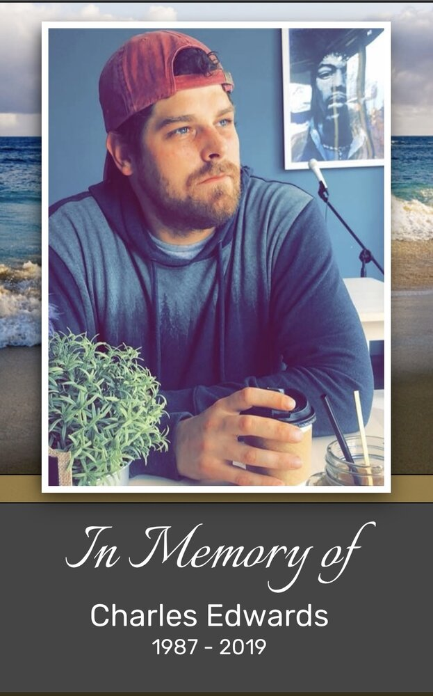

About Us
Our mission, our story, and the people behind BCE Sober Living
BCE Mission Statement
At BCE Sober Living, our mission is deeply personal and powerfully clear: to provide a safe, structured, and supportive recovery home in Frederick for people struggling with addiction who are truly ready to stop. This is not a flop house or a revolving-door environment. This is a place where lives are rebuilt, hope is restored, and recovery becomes real.
BCE III Sober Living LLC is named after my brother, who passed away from an accidental overdose five years ago. His loss was the catalyst for my own recovery and the inspiration for this mission. Every resident who walks through our doors represents a life that can be saved, a family that can be healed, and a community that can be strengthened.
Our Commitment to Residents
I will be present and available to all residents. Whether you need someone to talk to, help with job searches, résumé preparation, insurance navigation, doctor appointments, or applications for available benefits—I will be there. I also have two licensed therapists who have offered to lead workshops, run therapeutic exercises, and support residents who ask for it.
This isn't just about providing housing. It's about providing hope, structure, accountability, and genuine support for people who are ready to reclaim their lives.
What We Believe
Recovery is Possible: I've lived it. I know what it takes, and I know what awaits on the other side. Recovery isn't just about stopping—it's about starting something better. It's about peace, happiness, and love.
Readiness Matters: We focus on those who are ready and willing to be helped. This home is for people who genuinely want what so many of us in recovery have found. Because when you're ready, amazing things become possible.
Community Strength: By helping individuals recover, we strengthen our entire community. Frederick has shown me incredible kindness and support, and I'm committed to giving that back tenfold.
No One Is Beyond Hope: I woke up on a ventilator to learn my brother had passed two weeks earlier. That trauma could have destroyed me, but instead, it transformed me. If I can find recovery after that, so can you.
Our Standards
BCE Sober Living will maintain high standards because the people we serve deserve nothing less. This means:
A structured environment with clear expectations and accountability measures that help residents succeed. A safe, comfortable home maintained to professional standards. Active support from someone who understands addiction both personally and professionally. Access to therapeutic resources and community connections. Zero tolerance for active substance use—because everyone's recovery depends on maintaining a sober environment.
My Vow to Frederick
I vow to help and provide a safe, secure, and structured environment for the citizens of this town. I will do everything in my power to save the ones that want it. The people who want what I and many others have assiduously achieved: Peace, happiness, and love.
I've found my calling: to assist and guide individuals toward a life worth living, and to support the families who are also impacted by addiction. Let's focus on those who are ready and willing to be helped, and in doing so, strengthen our entire community.
Who We Are
BCE Sober Living, L.L.C is a recovery home in Frederick, Maryland, founded by William Edwards and operated under Edwards Co, Inc. Unlike typical sober living facilities, BCE represents something deeply personal—a mission born from tragedy, fueled by lived experience, and committed to saving lives.
The name "BCE III" honors William's brother, who passed away from an accidental overdose. That devastating loss became the turning point that led William to recovery and, ultimately, to founding this home. Every aspect of BCE is designed with one goal in mind: helping people who are truly ready to stop using and start living.

The Serenity Prayer
God, grant me the serenity to accept the things I cannot change,
Courage to change the things I can,
And wisdom to know the difference.
In loving memory of Charles Edwards
1987 – 2019
Our Founder's Background
William Edwards brings a unique combination of personal recovery experience and professional expertise to BCE Sober Living. He's worked with treatment centers since 2010—both as a professional and as someone who has sought help himself. This dual perspective shapes everything about how BCE operates.
William holds an undergraduate degree in quantitative finance from James Madison University and a master's degree in computer science from Columbia University. He's worked as a quantitative analyst for major corporations including Marriott, Starwood, Pepsi, Dannon, and two REITs. He was previously FINRA-registered (Series 7, 63, and 65), passed the New Jersey Bar Exam, and held a real estate license in Virginia.
This background isn't about credentials—it's about demonstrating that William has done his due diligence, knows how to structure a successful operation, and is committed to running BCE with professionalism and integrity.
Why Frederick?
Location matters immensely in recovery. Frederick offers everything residents need: proximity to healthcare and treatment resources, employment opportunities, access to recovery meetings and support groups, a welcoming community that has embraced this mission, and the perfect balance of urban resources and small-town support.
Frederick has been incredibly supportive of William's vision. The response from this community has been overwhelmingly positive, with offers to volunteer, connections to resources, prayers, and encouragement. This is exactly the kind of community where a recovery home can truly thrive.
What Makes BCE Different
Hands-On Founder Involvement: William isn't just a businessman running a facility from afar. He will be present and available to residents, offering personal support, guidance with practical matters (job searches, résumés, insurance, appointments, benefits applications), and the perspective of someone who's lived through addiction and recovery.
Professional Therapeutic Support: Two licensed therapists have offered to lead workshops and therapeutic exercises for residents who want additional support. This goes beyond basic housing to provide real clinical resources.
Structure Without Being Institutional: This is not a flop house. It's also not a cold, institutional facility. BCE offers structure, accountability, and clear expectations within a supportive, understanding environment.
Focus on Readiness: We're honest about who we serve: people who are truly ready to stop. We can't help everyone, but for those who genuinely want recovery, we will move mountains to support them.
Our Services Include
24/7 Support
Professional staff available around the clock to ensure safety and provide assistance when needed.
Structured Environment
Clear guidelines, regular meetings, and accountability systems that promote responsibility and growth.
Community Connection
Access to local recovery meetings, treatment providers, and community resources.
Life Skills Development
Support in building essential skills for independent living, employment, and long-term success.
Safe & Sober Environment
Regular monitoring and clear policies ensuring a drug and alcohol-free living space.
Comfortable Accommodations
Quality furnishings, modern amenities, and well-maintained facilities that feel like home.
The BCE Promise
William's promise to every resident is clear: "I vow to help and provide a safe, secure, and structured environment. I will do everything in my power to save the ones that want it. The people who want what I and many others have assiduously achieved: Peace, happiness, and love."
This isn't marketing language. It's a personal commitment from someone who knows what's at stake because he's lived it.
Meet William Edwards — Founder of BCE Sober Living

BCE Sober Living was born from personal tragedy, profound transformation, and an unwavering commitment to helping others find the recovery that saved my life.
A Story of Loss and Redemption
Five years ago, my brother passed away from an accidental overdose. That, unfortunately, was the moment I finally decided to stop using. I woke up on a ventilator two weeks after he had already passed to learn he was gone. The experience traumatized me, and the guilt is something I will carry forever.
I've worked with treatment centers since 2010—both professionally and as someone who has sought help myself. That dual perspective—understanding addiction from the inside while also working within the recovery field—has shaped everything about BCE Sober Living.
Why BCE? Why Frederick?
My goal is clear: to open a sober living home in the City of Frederick for people struggling with addiction who are truly ready to stop. This will not be a flop house or a revolving-door environment. It will be a structured, supportive recovery home where I will be present and available to all residents.
Whether residents need someone to talk to, help with job searches, résumé preparation, insurance, doctor appointments, or applications for available benefits—I will be there. I also have two licensed therapists who have offered to lead workshops, run therapeutic exercises, and support residents who ask for it.
Frederick is one of the most incredible places I've lived, and that's entirely because of the people who make up this community. The response from this city has been overwhelmingly positive, and I couldn't imagine a better place to fulfill my purpose and help save the lives of those who want it.
A Foundation Built on Experience
I hold an undergraduate degree in quantitative finance from James Madison University and a master's degree in computer science from Columbia University. Professionally, I've worked as a quantitative analyst for organizations including Marriott, Starwood, Pepsi, a hedge fund, Dannon, and two REITs. I was previously FINRA-registered with Series 7, 63, and 65 licenses, passed the New Jersey Bar Exam, and held my real estate license in Virginia.
I share this not to boast, but to emphasize that I am not entering this venture blindly. I've done my due diligence, I'm well aware of what I'm doing, and I know how to structure this home for success. Under my S-corp, I've formed BCE III Sober Living LLC—named after my brother—for this project.
My Commitment to You
I've always made it a point to help others, sometimes to the detriment of my own well-being. I've learned from that mistake. My focus now is helping the people who genuinely want what I—and so many others in recovery—have found, because it really is great!
I vow to help and provide a safe, secure, and structured environment for the citizens of this town. I will do everything in my power to save the ones that want it. The people who want what I and many others have assiduously achieved: Peace, happiness, and love.
A Message of Hope
I've found my calling: to assist and guide individuals toward a life worth living, and to support the families who are also impacted by addiction. Let's focus on those who are ready and willing to be helped, and in doing so, strengthen our entire community.
Every resident who walks through our doors will be welcomed into a community built on hope, transformation, and the possibility of a brighter future. This is more than a business—it's my life's purpose.
Ready to Begin Your Journey?
Discover how BCE Sober Living can support your path to recovery.
Contact Us Today